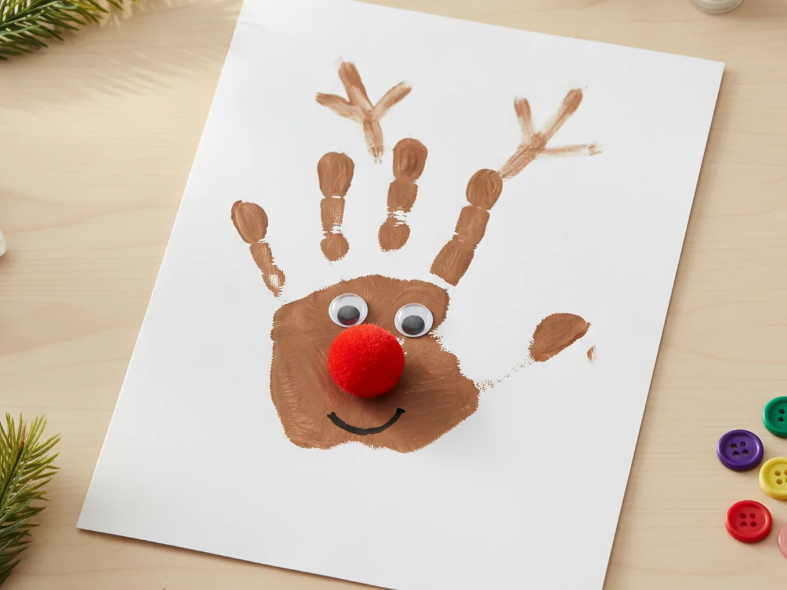
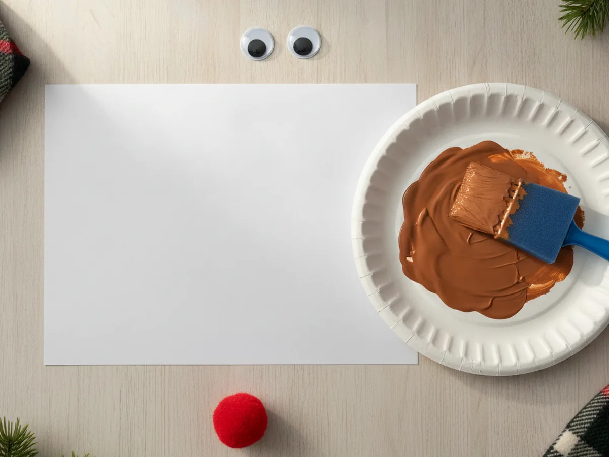
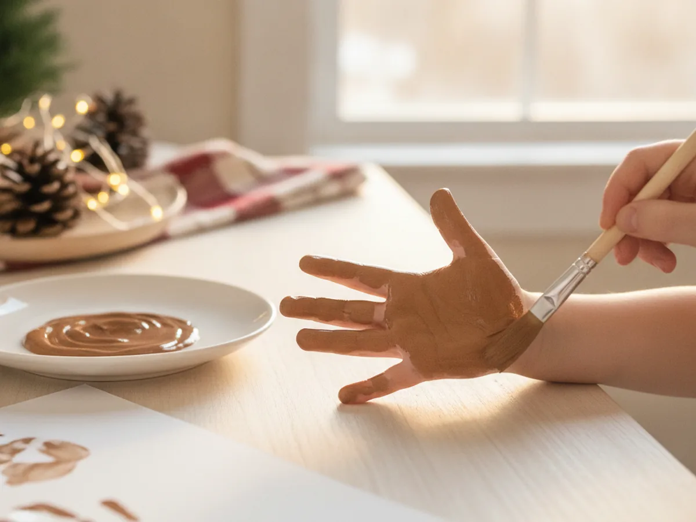
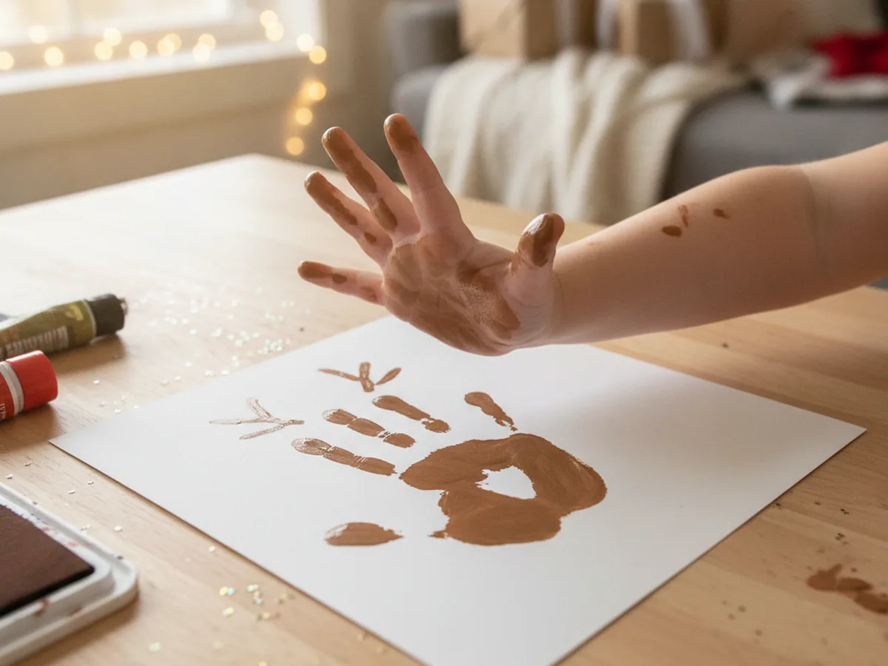
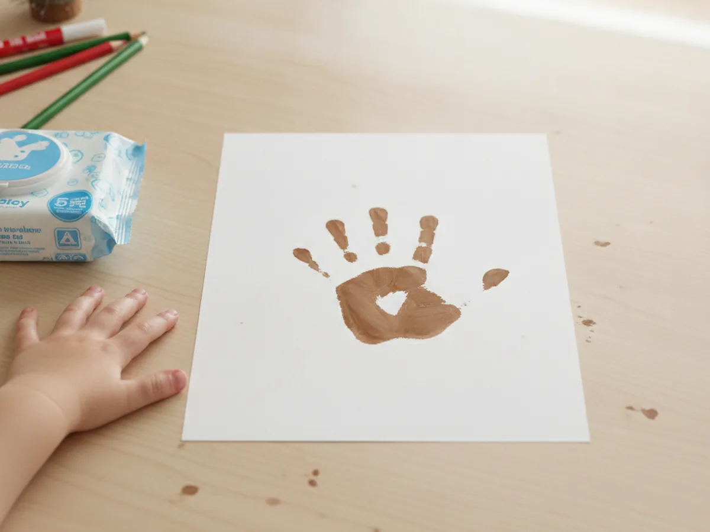
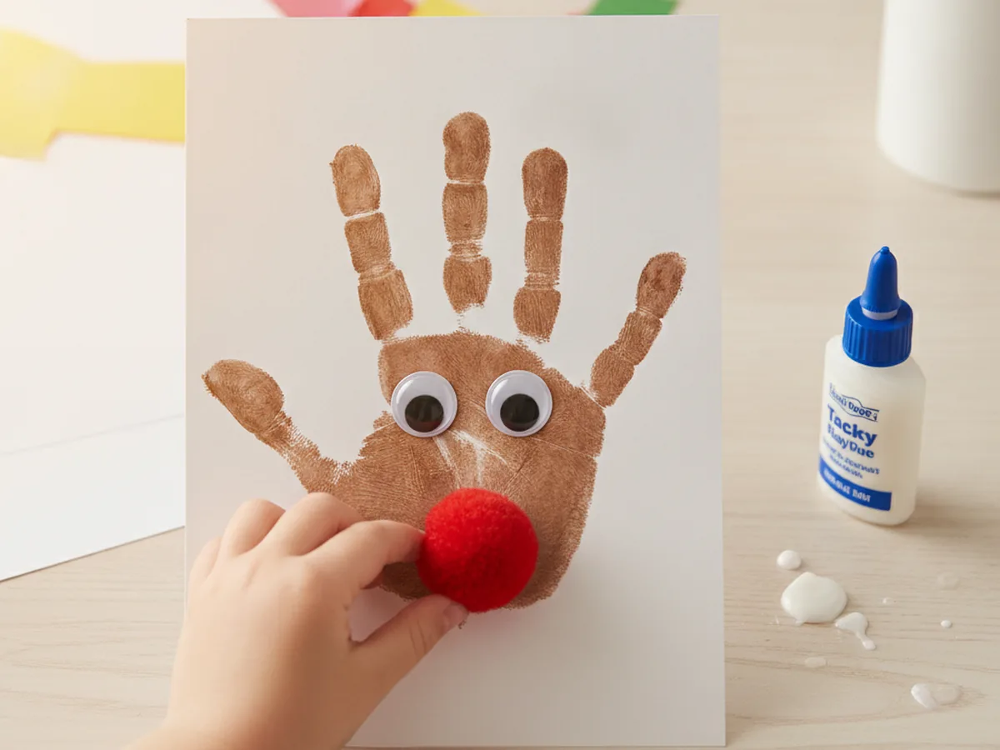
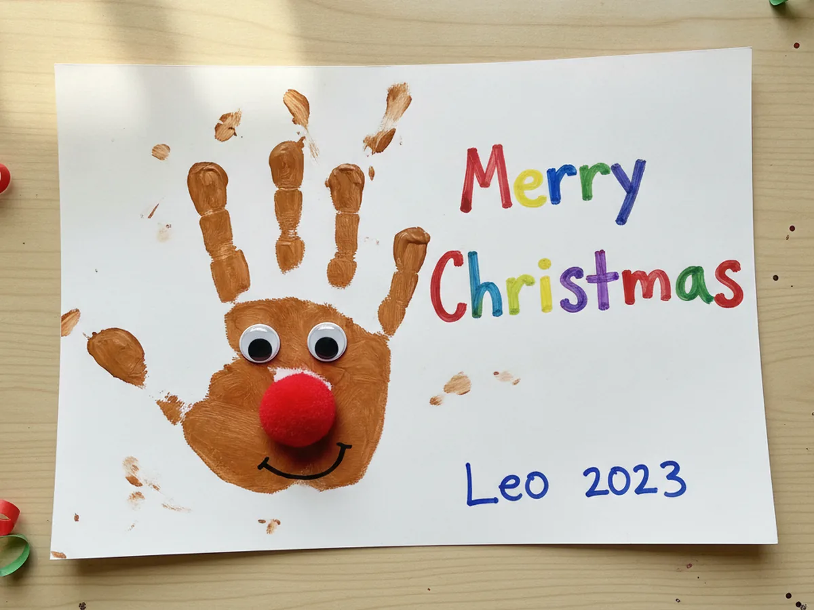

There is something magical about turning a little hand into a holiday keepsake, and this reindeer handprint craft does exactly that. The palm becomes a sweet reindeer face, the five fingers fan out into a set of cozy antlers, and a single red pom-pom turns the whole thing into the most lovable little Rudolph. With a sheet of cardstock, some brown washable paint, and a few minutes together, you and your child can make a reindeer you will both want to hang on the fridge all December long. It is foolproof for beginners, gentle enough for toddlers, and so much fun to peel away and see. Let's make a cheerful little Rudolph together! 🦌
Why Kids Love This Craft
Kids light up over this craft because the reindeer is made from their very own hand. That makes it feel personal and proud in a way no store-bought ornament ever could. Pressing a painted palm onto paper is also wonderfully satisfying, a little squishy and a little ticklish, and lifting the hand to find a reindeer waiting underneath is the happiest kind of holiday surprise. 🥰
There is gentle learning tucked inside the fun too. Spreading the paint and pressing down builds hand strength and body awareness, while pressing on that little red nose gives small fingers great fine motor practice. Deciding where the eyes go and how big to smile lets your child make real choices, which quietly grows their confidence.
Best of all, this reindeer handprint craft is forgiving and low-stress. A smudge or a slightly crooked antler only makes the reindeer look more handmade and more loved, so there is zero pressure to be perfect. The supplies are simple, the washable paint wipes off easily, and the project works for every age, which makes it an easy yes on a busy holiday afternoon.
What You'll Need
Here is everything you need for this easy handprint reindeer craft, and most of it is probably already waiting in your craft drawer.
- White cardstock, a sturdy sheet that holds the paint without curling or soaking through.
- Washable kids paint, you mainly need brown for the reindeer's hand print.
- Foam brushes, perfect for spreading a thin, even layer of paint on little hands.
- Self-adhesive googly eyes, for giving your reindeer a cute and friendly face.
- Red pom-poms, one little pom-pom makes the perfect shiny Rudolph nose.
- Tacky craft glue, for holding the pom-pom nose firmly in place.
- Washable markers, for drawing a little smile and writing a festive message.
- Baby wipes or a damp cloth, for quick and easy hand cleanup afterward.
Step-by-Step Instructions
Ready to make a reindeer your family will smile at all season long? Follow these simple steps and you will have a finished handprint in about half an hour, with a few helper tips along the way.
Step 1: Set Up Your Paper and Brown Paint
Start by laying a sheet of sturdy cardstock on your work surface and squeezing a little puddle of brown washable paint onto a plate. Brown is the only paint color you need for this reindeer handprint craft, since the whole hand becomes the reindeer. Setting everything out before painting keeps the moment calm and easy, so you are not reaching for supplies once your child's hand is already covered in paint.

Step 2: Paint Your Child's Hand Brown
Now for the fun part. Use a foam brush to paint your child's whole hand brown, covering the palm and all five fingers. The palm will become the reindeer's face and the spread fingers will become the antlers, so make sure every part gets a thin, even coat. A thin layer prints much more clearly than a thick, gloopy one, so brush off any extra before you press.

Step 3: Press the Handprint
Help your child spread their fingers wide, then press their painted hand firmly onto the cardstock with the fingers pointing up toward the top of the page. Gently push down on each finger and the heel of the palm so the whole print transfers, then lift the hand straight up without sliding it. Peeling the hand away to reveal a reindeer face with antlers is the magic moment of the entire reindeer handprint craft, so go slow and enjoy it together. ✨

Step 4: Let It Dry and Clean Up
Set the print somewhere flat and safe to dry for a few minutes while you wipe your child's hand clean with a baby wipe or damp cloth. Washable paint comes off skin easily, so cleanup is quick and stress-free. Letting the print dry fully before you decorate keeps the brown from smearing, and it gives your little one a happy moment to admire the reindeer shape they just made.

Step 5: Add the Eyes and Rudolph's Red Nose
Once the print is dry, it is time to bring your reindeer to life. Stick two googly eyes near the middle of the palm, then add a dab of tacky glue and press a red pom-pom at the bottom of the palm for Rudolph's shiny nose. That one little red nose is what turns a plain brown handprint into an unmistakable, friendly reindeer your child will be proud of.

Step 6: Add a Smile and a Festive Message
Now finish your reindeer with a few last touches. Use a marker to draw a little smile under the red nose, then write a sweet message such as "Merry Christmas" or "I love you deer-ly" beside the antlers. Have your child sign their name and the year, and your reindeer handprint craft is ready to display. Step back and admire the cheerful little Rudolph you made together.

Variations to Try
Footprint Reindeer: Trade the handprint for a footprint to capture your littlest one before they grow. The heel becomes the reindeer's face and the toes become tiny antlers, making an unbelievably sweet keepsake for babies who cannot open their hands for a print just yet.
Brown Antler Version: Skip the painted fingers and press just the palm, then let your child glue on torn brown paper antlers above the face. This gives older kids a little more to cut and arrange, and it keeps the painting part extra quick.
Reindeer Family Banner: Make one reindeer for each person in your family using different hand sizes, then string the prints together for a warm holiday banner. It turns this simple reindeer handprint craft into a cozy Christmas centerpiece everyone helped create.
Final Thoughts
This reindeer handprint craft proves that the sweetest holiday decorations are the ones made by little hands. It takes just a few supplies and half an hour, yet it captures something you cannot buy anywhere, the exact size of your child's hand on this one special Christmas. The smudges and the slightly crooked antlers are not mistakes at all, they are the parts that will make you smile every time you see it. 🎄
So spread out some paper, squeeze out the brown paint, and savor this cozy little moment with your child. The reindeer will look adorable on the fridge or tucked into a holiday card, and you will treasure the memory of making it together. Happy crafting, friend! 💚
More Crafts You'll Love
If your little one loved making this cheerful Rudolph, these cozy Christmas crafts are a perfect next project: